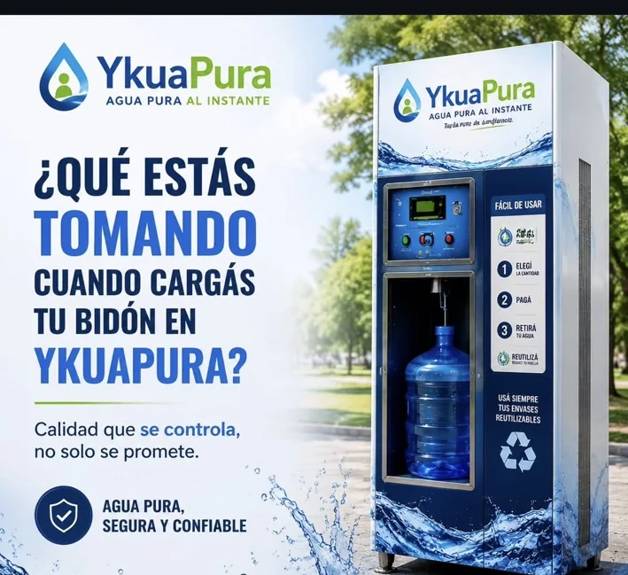
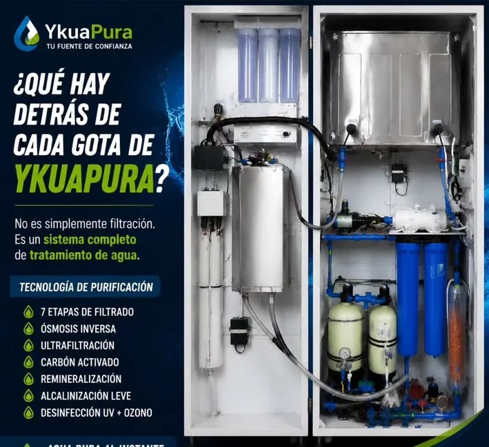
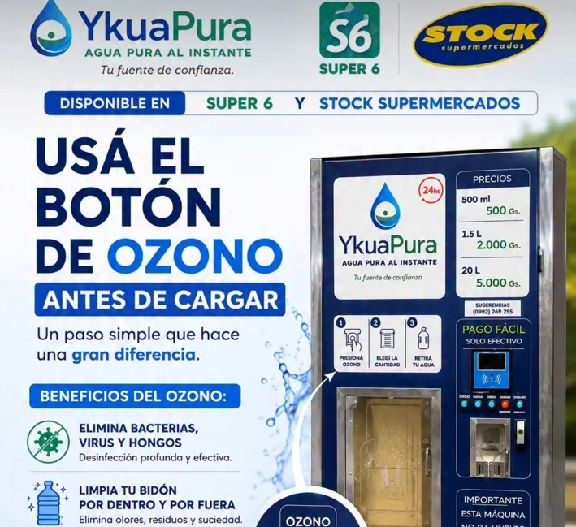
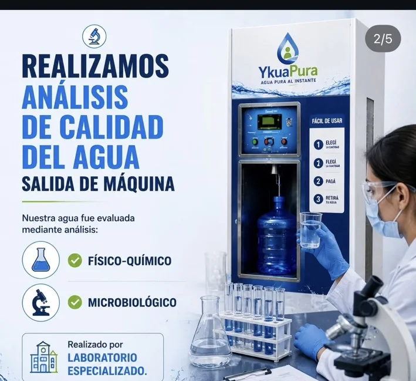
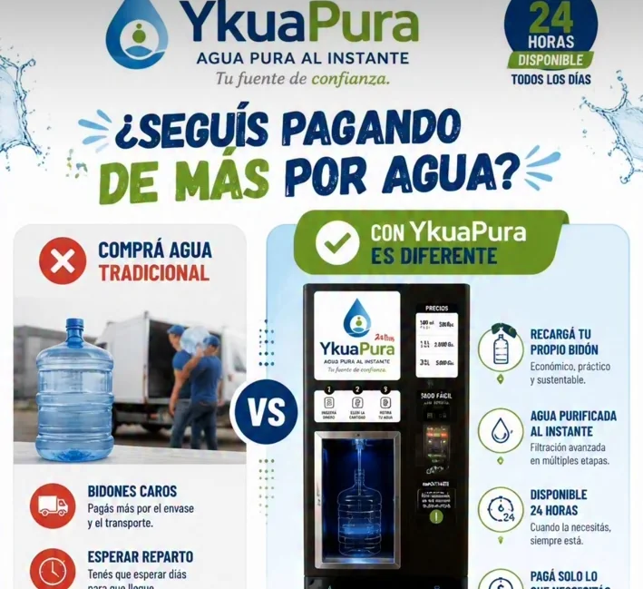

♻
Traé tu envase
Podés usar un bidón, termo o botella reutilizable en buenas condiciones.
Traé tu bidón, termo o botella reutilizable. Elegí la cantidad, pagá en el equipo y recargá agua purificada en pocos pasos.

Un sistema autoservice diseñado para que puedas cargar agua purificada sin depender de horarios de reparto.
Podés usar un bidón, termo o botella reutilizable en buenas condiciones.
En equipos con función de ozono, podés realizar una higienización previa antes de la carga.
Seleccioná el volumen que necesitás y seguí las indicaciones de pago del equipo.
Colocá el envase, completá la carga y retirá tu agua purificada.
El sistema combina distintas etapas de tratamiento para reducir sedimentos, olores, sabores e impurezas, y completa el proceso con desinfección.


La función de ozono permite higienizar el bidón antes de llenarlo. Es una etapa práctica para complementar el cuidado del envase reutilizable.
Higienización adicionalAyuda a reducir microorganismos y residuos del envase.
Sin productos perfumadosEl proceso no busca agregar olor ni sabor al agua.
Más vida útil del bidónReutilizar y cuidar el envase reduce descartables.
YkuaPura comunica controles físico-químicos y microbiológicos realizados sobre agua de salida de máquina mediante laboratorio especializado.
Los resultados específicos corresponden a los puntos y fechas analizados. Para información vigente, consultá a YkuaPura.

El modelo autoservice permite reutilizar el mismo recipiente y cargar solamente el volumen que necesitás.

Recargá desde una botella hasta un bidón de 20 litros.
Ideal para botella o termo.
Una carga práctica para llevar.
Para tu bidón reutilizable.
Precios comunicados por YkuaPura en sus puntos de recarga. Pueden actualizarse.
Recargá en puntos seleccionados de Encarnación, Ciudad del Este y Asunción.
Entrada lateral, al lado de la farmacia.
Ver en Maps ↗Frente al acceso principal.
Ver en Maps ↗Punto de recarga en sucursal Los Laureles.
Ver en Maps ↗Consultas, soporte y sugerencias de nuevas ubicaciones.